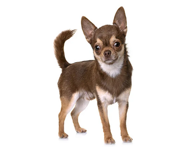
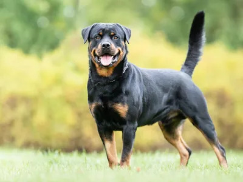

Are you in search of a new best friend? Your quest ends here. Whether your heart longs for the playful patter of puppy paws, the soft purr of a kitten, the wagging tail of a dog, or the comforting presence of a cat, our Pet Adoption Gallery is brimming with marvelous pets eagerly waiting to find their forever homes.
If a particular furry face catches your eye and tugs at your heart, we kindly invite you to complete a pre-adoption application. This simple step marks the beginning of our adoption process, designed to ensure the perfect match. We believe in the importance of aligning lifestyles and preferences, ensuring a seamless integration of your new best friend into your life. After all, it's about finding that special someone who fits just right.
Once we review your application and determine a potential match, we'll gladly arrange a meeting for you and your prospective furry companion. There's nothing quite like that first, magical encounter when you know you've found your perfect match.
Curious about the complete adoption process? Reach out to us here
-
BeagleA beagle laying in the shade of a tree
 BulldogAn English bulldog
BulldogAn English bulldog- 
ChihuahuaSad looking chihuahua
-
PoodleClapton the poodle in the water
 DachshundA long-bodied dachshund dog standing in a field
DachshundA long-bodied dachshund dog standing in a field PoodleDiana the poodle standing on a beach
PoodleDiana the poodle standing on a beach German ShepherdA German shepherd dog standing in the grass
German ShepherdA German shepherd dog standing in the grass Golden RetrieverA golden retriever sitting in a park
Golden RetrieverA golden retriever sitting in a park Labrador RetrieverA Labrador retriever dog standing close to a river
Labrador RetrieverA Labrador retriever dog standing close to a river- 
RottweilerA happy Rottweiler standing in the field
 Siberian HuskyA Siberian husky standing on a rock
Siberian HuskyA Siberian husky standing on a rock Yorkshire TerrierA Yorkshire terrier laying on a boat deck
Yorkshire TerrierA Yorkshire terrier laying on a boat deck